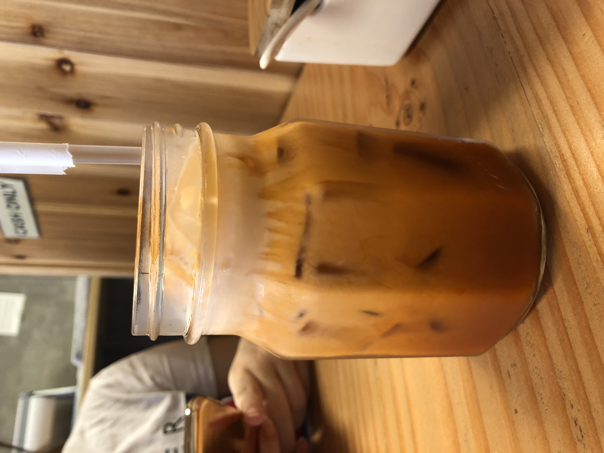
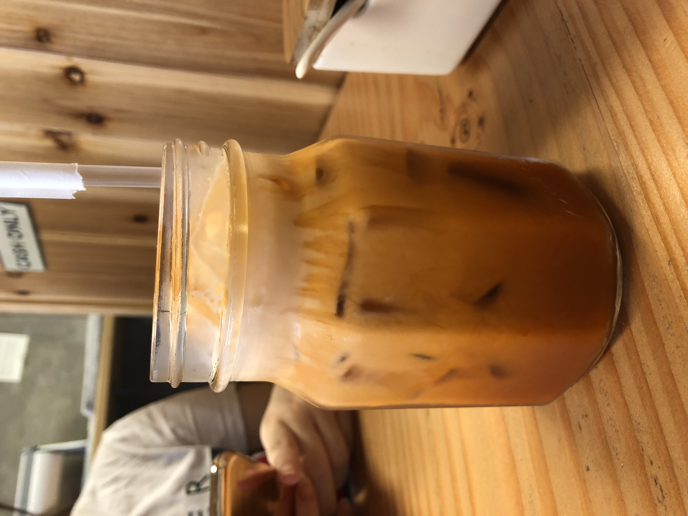

Asian Bowl
Asian Bowl is the burmese resturant. It is hard to find a burmese resturant in New York City. If you want to know how is burmese food look like and taste like, then you should definitely go to Asian Bowl. The ones I tried is Kyay Oo. It's vermicelli in a pork broth with the pork intestines and a soft top on the top. If you really want to order the authentic burmese food I would recommend to order Mote Hin Khar which is burmese signature food and also Pickel Tea Leaf salad. Try out thier Ginn Thote, thin giner strip salad with spices which was mention in The New York Time.
Price: $6-$20
Recommendation: Mote Hin Khar, Ginn Thote, Pickel Tea Leaf salad


Akino
Akino is the japanese sushi Buffet. It's only cost around $16 per person for lunch special for weekend. However, it has timelimit which is an hour and a half per person. If you love fresh sushi roll, you should definitely check this place out. Make sure that you order shrimp tempura if you happen to eat there becuase it is crispy and yummy and my favorite. Don't forget to try spciy kani salad which is immitated crab stick salad and Dynamite roll which is
Price: $16 (Lunch hrs only 11am-4pm)
Recommendation: Spicy Kani Salad, Shrimp Tempura, Dynamite Roll


Eim Khao Mun Kai
Khao Mun kai mean chicken rice in Thai. This place serve Hainanese chicken rice along with sauce, sweet soy sauce and chicken soup with radish in it. It is also comforting dish in Thailand.The restaurnt is not spacious but always crowded and takes a short break from 3pm to 4pm. If you are sweet tooth, you might like Thai Iced Tea.
Price: $10-$24
Recommendation: Chicken rice (main dish), Thai Iced Tea
 

{kind=link}
Tea Cup Cafe
Tea Cup Cafe is the thai cafe but what make it different from the other cafe is that they have "Boat Noodle". Boat Noodle is one of thai street food which is savory and spicy.Try their pork noddle soup which is my favorite.For the dessert, they also have toast bread with thai tea or pandan custard and shave ice which is perfect for this summer.And also make sure to try their bubble tea. Thai Shave Ice in their menu is perfect for this summer. It is also a good place to hang out with your friends.
Price: $5-$15
Recommendation: Toast Bread with Thai Tea Custard, Shave Ice, Boat Noodle, Bubble Milk Tea


Yaya Tea
The signature food of Ya Ya Tea is Onigini which is rice ball in Japanese. They have different types of rice balls and fries. It is a great placce to hang out with friends and grab a bite for your lunch. They also have drink but I am not a big fan of thier tea. The recomment food for Ya Ya tea are Japanese rice ball, Takoyaki which is japanese snack fill with octopus tanticle and lastly, shrimp tempura. This is also another good place not only to hang out with your friend but also to study.
Price: $3-$10
Recommendation: Takoyaki, Japanese Rice Ball, Shrimp Tempura